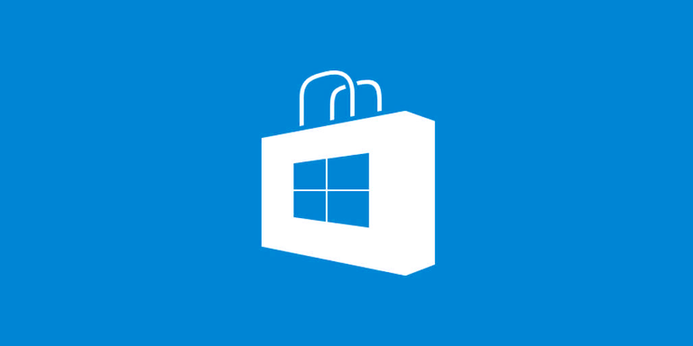

Steam

Steam – platforma dystrybucji cyfrowej i zarządzania prawami cyfrowymi, system gry wieloosobowej oraz serwis społecznościowy stworzony przez Valve Corporation.
W październiku 2012 roku Valve rozszerzyło ofertę o oprogramowanie niebędące grami. Steam pozwala użytkownikowi na instalację i automatyczne zarządzanie oprogramowaniem na wielu komputerach oraz dostarcza funkcje społecznościowe takie jak listy znajomych i grupy, zapis w chmurze, rozmowy głosowe oraz czat dostępny podczas gry.
Origin
Origin to platforma do gier online , dystrybucji cyfrowej i zarządzania prawami cyfrowymi (DRM) opracowana przez Electronic Arts, która umożliwia użytkownikom kupowanie gier w Internecie na komputery i platformy mobilne oraz pobieranie ich za pomocą klienta Origin (wcześniej EA Download Manager, EA Downloader i EA Link). Origin dla Maca jest dostępny od 8 lutego 2013 r.
Battle.net
Battle.net, znany również jako Aplikacja Blizzarda – platforma do gry wieloosobowej firmy Blizzard Entertainment utworzona na przełomie 1996 i 1997 roku na potrzeby gry Diablo. 20 marca 2009 firma zaprezentowała nową wersji serwisu, Battle.net 2.0, wspierającą nowe tytuły, jak StarCraft II: Wings of Liberty czy Diablo III.
Windows Store

Sklep Microsoft (ang. Microsoft Store) – sklep z aplikacjami dla systemu operacyjnego Windows 8 oraz Windows 10. Został po raz pierwszy zaprezentowany przez firmę Microsoft na konferencji 6 grudnia 2011 roku; wprowadzony równolegle z Windows 8 i Windows Server 2012. Jest to jedyne źródło, z jakiego użytkownicy mogą pobierać aplikacje z interfejsem Modern UI, jednak przeznaczony jest także do prezentacji aplikacji desktopowych certyfikowanych do działania na systemie Windows.